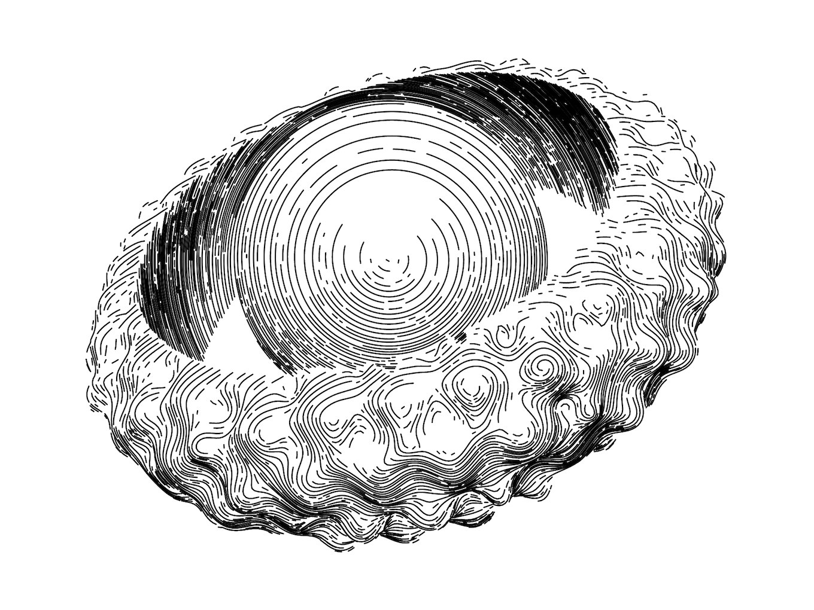
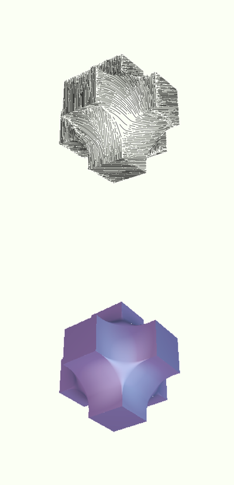
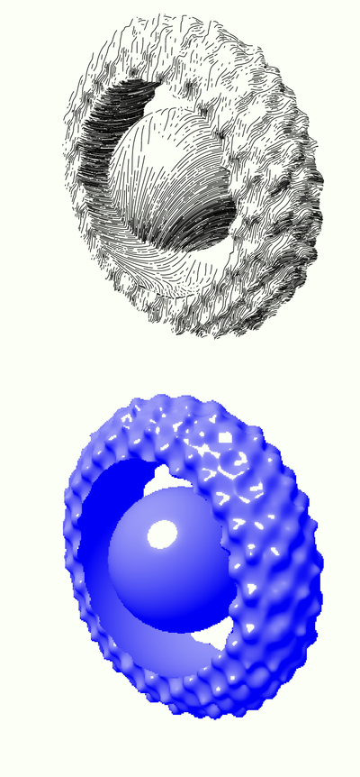
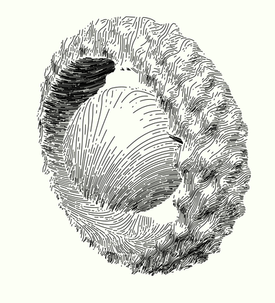
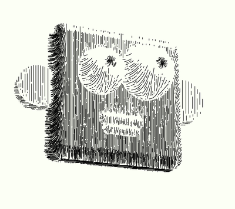
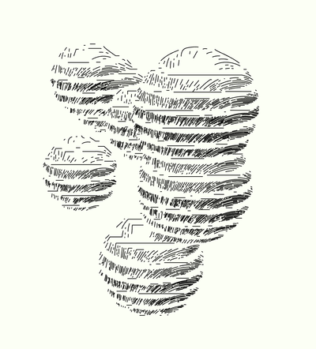
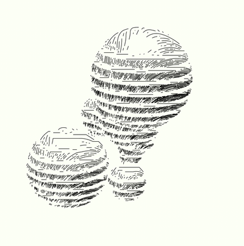
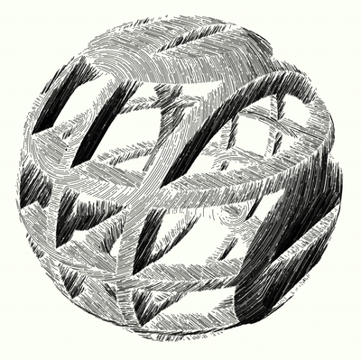
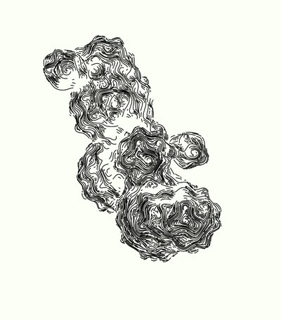
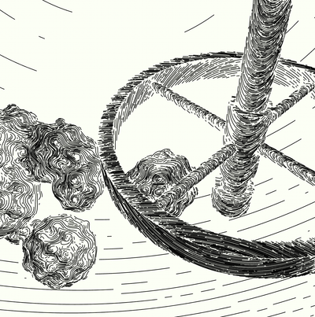

I would like to give you a preview of my new project that I'm really excited about - Rayven. It renders 3D scenes as if they were line-hatched by hand:

I've had this idea for a while and after researching, I found three projects that became my inspiration: Michael Fogleman's ln, Kushiro's Hatch Lines Shader and Piter Pasma's Rayhatching.
Finally, I decided to give it a try.
Although it's far from finished, I want to share my progress. Once I'm satisfied with it, I plan to open-source it and write another post to show you under the hood.
Meanwhile, I used it to create and plot these two drawings for Work&Co's tenth anniversary - version 1 and version 2
The first text render #
The first step was to build a basic 3D renderer with objects defined as signed distance functions. It used text to render the scene and it was based entirely on Theia Vogel's great article.
{kind=link}
Better ray-tracing and the first vector renders #
Then, I started improving the ray-tracing part. Articles by Inigo Quilez and Jamie Wong were immensely helpful.
With proper ray-tracing in place, I began figuring out how to hatch a scene using vector lines. I started simple, using only vertical lines (image on the left). Then, I gradually worked my way to using vector fields (image on the right).
{kind=link}
Tweaking vector rendering #
Once I had basic vector rendering in place, I spent a lot of time tweaking and experimenting. Here are some examples using lights, boolean operations, displacement, and different hatching options.
In the first two images you can also see the raster output I'm using for debugging.
{kind=link}

{kind=link}

{kind=link}

{kind=link}

{kind=link}

{kind=link}

{kind=link}

{kind=link}

{kind=link}

Rust version #
As you can imagine, the JavaScript version is not very performant. To speed up rendering, I decided to learn some Rust and port Rayven to it. Here are a few screenshots in the terminal, along with the SVG render at the end.
{kind=link}
{kind=link}
{kind=link}
Rust is fast, but it doesn't provide me with a short feedback loop, which is essential when I'm using Rayven to draw. On the other hand, JavaScript is slow, but being dynamic and a scripting language, it gives me a better way to iterate and experiment.
Now, I want to combine the two - keep Rayven's engine in Rust, compile it to WASM, but use JavaScript to make scenes and compositions.
It is not ready yet #
Building Rayven is a super fun process, so I really hope you liked what I showed you today. There are still a handful of features that I want to add, polish its API, but once it is ready, I plan to publish it to the world.
Stay tuned!